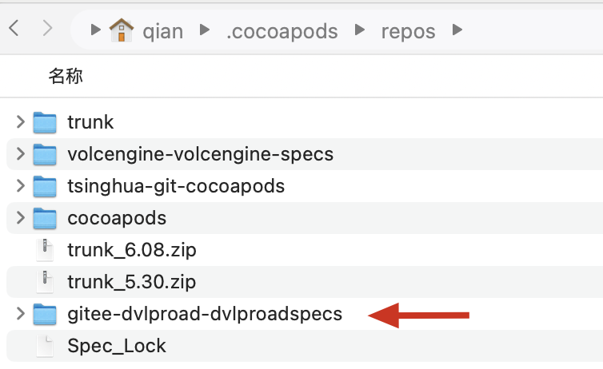

最新ruby源
gem sources --remove https://gems.ruby-china.org
gem sources -l
gem sources --add https://gems.ruby-china.com
1、查看pod版本和安装路径
pod --version
which pod
2、安装 CocoaPods
sudo gem install -n /usr/local/bin cocoapods # OS X 版本 > 10.11，使用此命令安装
sudo gem install cocoapods # OS X 版本 <= 10.11，使用此命令安装
其他参考：百度地图中的CocoaPods文章
3、升级
sudo gem update cocoapods
以下该行命令可升级cocoapods
gem install cocoapods
移除现有pod
rm -rf /usr/local/bin/pod
重新下载pod
sudo gem install cocoapods
open ~/.cocoapods/repos

常见：直接Podfile中指定source，然后执行 pod install 即可。
结果为：gitee-dvlproad-dvlproadspecs
也可以自己添加库
cd ~/.cocoapods/repos
pod repo add dvlproad https://gitee.com/dvlproad/dvlproadSpecs.git
结果为：dvlproad
in `initialize_from_file’: [Xcodeproj] Unknown object version (56). (RuntimeError)
原因：Xcode与cocoapods不兼容。
解决：修改compatibilityVersion，将Project Format 改为Xcode 13.0-compatible
给 Pod 添加资源文件
# 利用 resources 属性，这些资源文件在 build 时会被直接拷贝到 client target 的 mainBundle 里。这样就实现了把图片、音频、NIB等资源打包进最终应用程序的目的。
s.resources = ['CQImagePickerSampleView/Modules/HealthCer/NDM/SimulateApiJSON/*']
# 利用 resource_bundles 属性，这些资源文件在 build 时会被拷贝到 指定的 customBundle 里。这样就实现了把图片、音频、NIB等资源打包进最终应用程序的目的。
s.resource_bundles = {
'CQImagePickerSampleView' => ['CQImagePickerSampleView/**/*.{png,jpg}'] # CQImagePickerSampleView 为生成boudle的名称，可以随便起，但要记住，库里要用
}